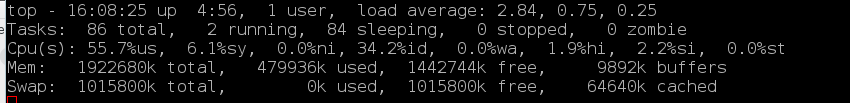
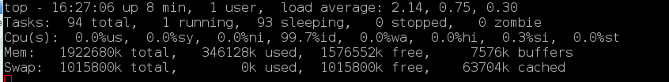
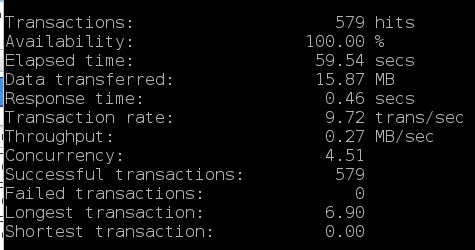
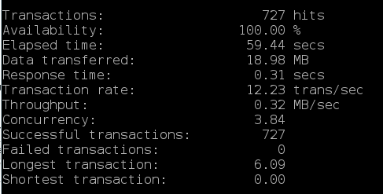
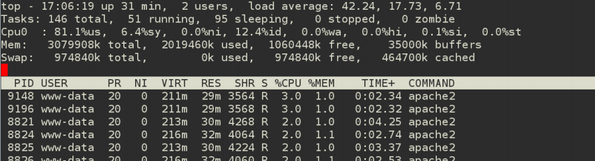
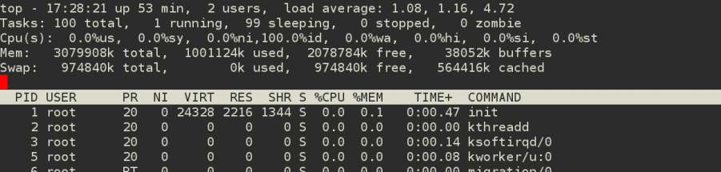

Otimizando o desempenho do

Você instala um WordPress e está tudo lindo!
Certo?
Errado!
Alguns problemas:
- Desenvolvedores acham que se funcionar na máquina deles, não há problemas...
- "Meu site não tem muitos acessos..."
- Faço amanhã!

Desempenho?
- Ninguém gosta de site lento ou fora do ar.
- Cada milisegundo importa pro usuário final. Pode não parecer muito, mas importa.
- Google mensurou perda de 20% de tráfego em um aumento de 400ms.
- Amazon mensurou perda de 1% de vendas em um aumento de 100ms.
Tenso né?

Desempenho?
Nosso objetivo: carregar a página o mais rápido possível e para o maior número de pessoas possíveis ao mesmo tempo.
Tamanho da página e otimizações HTML
Não vamos falar aqui sobre coisas como:
- Tamanho das páginas;
- Javascript e CSS unificados e minimizados;
- Compressão de imagens;
- Javascript não-bloqueador.
Se desenvolvedores não sabem desses tópicos, procurem saber urgentemente!
Dicas genéricas do WordPress
Também não vamos falar muito sobre o que todo mundo fala:
- Tenha sempre o WordPress atualizado;
- Evitar plugins ruins (só porque ele faz algo legal, não quer dizer que é bom);
- Remover todos os plugins e comparar desempenho. Ir habilitando um a um;
Esses itens aí todo usuário de WordPress tem que ter decorado!
Dicas do lado do servidor
(essas todo sysadmin tem que saber)
Item 0: Não existe receita de bolo, nem fazer apenas uma vez
Item 1: Armazenamento
Como você armazena o WordPress?
- Em instalações pequenas tudo funciona em uma máquina só? Os arquivos PHP, as imagens de upload.
- Em instalações grandes, várias máquinas compartilhando um storage comum?
Arquivos locais preferencialmente
- A maioria dos arquivos do WordPress é estática, então pode ser colocada em disco local;
- A exceção são os arquivos de upload (wp-content/upload), que precisa ser compartilhado. Compartilhe apenas esse diretório, e para todo o resto invente um método de distribuição: pacote, rsync, ou outros.
Item 2: PHP e Servidor Web

PHP é lento e gasta muita memória
- Isso é um fato. Nem dá para discutir;
- Quanto mais memória um plugin ou operação do WordPress alocar, provavelmente mais lento ele vai ser pra carregar;
- Você acha que memória é sempre o problema? Pense duas vezes: processamento pode ser bem pior;
Reduza ao máximo as chamadas PHP
- Para os desenvolvedores: não é porque você tem muito hardware (processamento e memória) que você pode programar como quiser. Otimize o seu código.
- Use PHP para chamadas totalmente dinâmicas. Não é muito legal fazer um plugin que cria uma imagem dinamicamente;
mod_php vs. mod_fcgid
- Pra quem usa Apache, mod_php é a implementação padrão;
- Prefira o fcgi style (no Apache, mod_fcgid) (também tem o php-fpm)
- Mas por que não usar essa opção padrão?
antes
mod_php

mod_fcgid

mod_php

mod_fcgid

Forks e Threads
- Vá diminuindo a opção memory_limit no php.ini e veja o menor valor que o seu WordPress aguenta;
- Calcule quanto seu servidor aguenta: Tamanho médio do processo PHP vezes número de usuários simultâneos;
- Configure o web server para liberar as threads com certa frequencia (recycling), assim a memória é liberada frequentemente também. (perde um mínimo de desempenho no processamento mas ganha bastante segurança na memória.)
Prefira usar os recursos nativos dos servidores web
- Redirects podem e devem ser feitos via Redirect ou Rewrite do servidor, não pelo WordPress;
- Itens estáticos devem ser servidos sempre sem PHP. Pode até ser em um servidor separado (imagens, javascript/css);
- Se a cada requisição você gera uma lista dinâmica, considere gerar uma lista de tempos em tempos (exemplo: imagens upload de um wordpress network);
Item 3: Servidor MySQL
Tunning constante
- Sempre habilite o query cache;
- Use uma ferramenta como o mysqltuner para otimizar buffers e outros parâmetros;
- Habilite o slow-query para 2 ou 3 segundos e veja sempre o log de queries lentas para identificar códigos problemáticos;
- Crie rotina diária de OPTIMIZE em todas as tabelas pra evitar surpresas acumuladas.
Réplicas de Leitura
- Na maioria das vezes, consultas somente-leitura são as que mais aparecem no WordPress;
- Se o processamento do MySQL estiver muito alto, Use uma ou várias replicas de leitura para amenizar.
HyperDB
- Plugin feito pelo pessoal do WordPress.com que substitui o WPDB nativo na hora de se conectar aos bancos de dados;
- Pode-se configurá-lo para ler de vários slaves e escrever apenas no master (load balancing);
- Pode-se fazer particionamento na sua instalação, direcionando certas tabelas para determinados servidores. Útil principalmente em instalações multi-sites (network);
- Quando dá erro na conexão, ele tenta de novo e não deixa seu site TOTALMENTE indisponível.
Item 4: Cache
O mais importante de todos!
Como e quando fazer cache?
- Mexer no servidor web, código, banco de dados, entre outros, melhora mas não faz milagres. Quem faz milagre é o cache.
- Separe todos os itens estáticos (que podem ser vistos por todos os usuários igualmente e os dinâmicos (muda de usuário pra usuário);
- Exemplo: Estático é o texto do post. Dinâmico é a quantidade de visualizações do post.
Faça cache de tudo que for estático!
- O cache permite que a página seja gerada apenas uma vez e servida para muitos;
- Há várias técnicas de cache: cache de objetos, de consultas ao banco, de código php interpretado (opcode), de páginas no servidor web;
- Falaremos apenas de cache do lado do servidor.
Cache nível noob
- Baixe a sua página principal com um wget/curl e coloque o index.html na home do seu wordpress;
- Faça isso como uma rotina (exemplo: de 1 em 1 minuto) e você acaba de criar um cache e sua home aguentará muita porrada;
- Para os itens dinâmicos dentro da página, substitua por javascript ou iframes (podem me bater agora).
Cache nível estou começando a saber o que estou fazendo
- Use o plugin W3-Total-Cache;
- Com ele você pode: fazer cache das páginas em disco dinamicamente (melhor que o nível noob);
- Fazer cache de objetos do WordPress, de opcode, banco de dados...
- Usar CDN para imagens, habilitar compressão e Expires no servidor...
Cache nível 31337
- Use o varnish como front-end pro servidor web;
- Com ele você controla exatamente o que fazer cache ou não, por quanto tempo, baseado em URL, em extensão, em Cookie, ou seja lá o que for que tiver na requisição HTTP;
- Se o site cai, ele ainda pode servir o que já tá armazenado em cache. Assim você não deixa seus usuários na mão;
Cache nível 31337 p0w3r m4s73r bl4st3r ul7r4
- Combine o W3-Total-Cache com o varnish;
- Use o varnish para cache das páginas, e o W3-Total-Cache para todo o resto;
- O W3-Total-Cache vem com suporte ao varnish. Quando algo é atualizado, ele avisa para o Varnish invalidar o cache e servir a página atualizada (PURGE/BAN);
Exemplo simples, SEM cache
|
CPU: E7500 @ 2.93GHz 3GB de RAM apache2 + mod_php mysql 5.5 |
Concurrency Level: 50 Time taken for tests: 217.099 seconds Complete requests: 932 Requests per second: 4.29 [#/sec] (mean) Time per request: 11646.966 [ms] (mean) |

Exemplo simples, COM cache
|
CPU: E7500 @ 2.93GHz 3GB de RAM apache2 + mod_php mysql 5.5 |
Concurrency Level: 50 Time taken for tests: 1.602 seconds Complete requests: 10000 Requests per second: 6242.42 [#/sec] (mean) Time per request: 8.010 [ms] (mean) |

Aí sim!

Exceções
- Cookies sempre mudam de usuário para usuário;
- Autenticação e usuários logados;
- Query strings aleatórias NÃO! (wp_once?)
Dúvidas que surgem quando colocamos cache...
- Meus dados não estão sendo atualizados! (Purge neles!)
- Tenho várias versões de páginas, como fazer cache diferente? (Cookie é bom!)
- Minha administração parou de funcionar direito! (Nunca faça cache da administração!)
- Como devo cachear meu site? (Não sei, você tem que conhecer o seu site! Estude-o!)
Quando tudo fica pronto...
E seus clientes e desenvolvedores...
Obrigado! :)

Por Hugo Cisneiros | http://www.devin.com.br
Gifs divertosas tiradas do DevOps Reactions